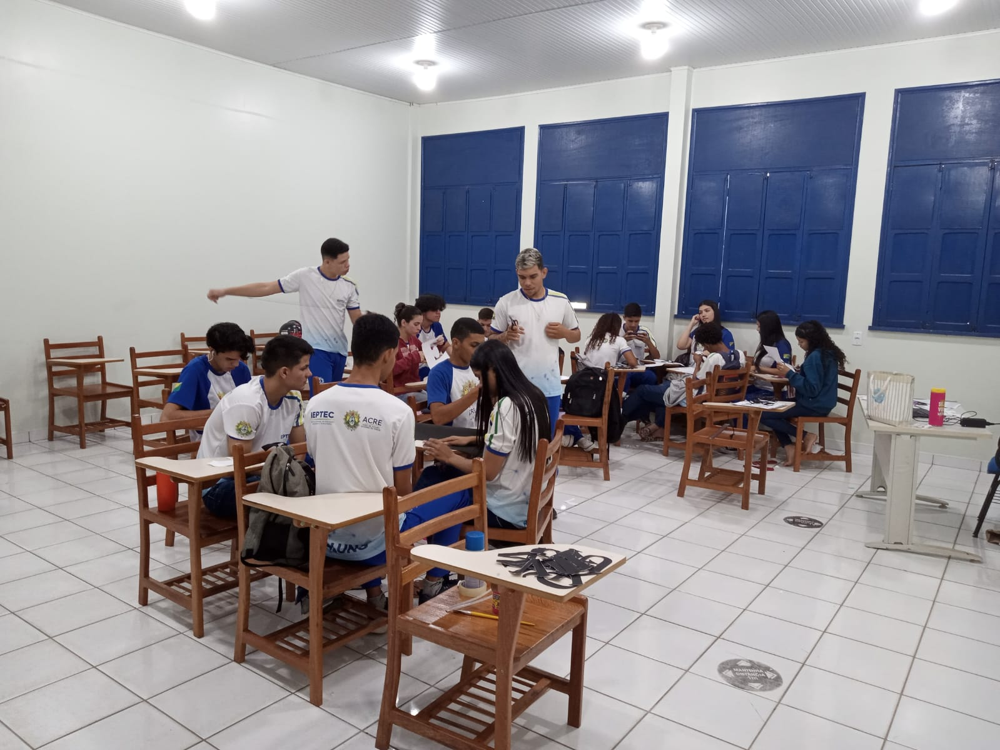

Técnico em Administração
Sobre o curso:

Administração é a ciência que se dedica ao estudo e gestão de organizações, sejam elas públicas ou privadas. Seu objetivo é promover a eficiência na gestão dos recursos, buscando atender às necessidades e demandas da sociedade e do mercado de forma eficaz.
O curso de administração é uma graduação que prepara os estudantes para atuarem como gestores em empresas públicas ou privadas. O currículo inclui disciplinas como contabilidade, finanças, marketing, gestão de pessoas, empreendedorismo, estratégia e tomada de decisões. Além disso, muitas instituições oferecem atividades extracurriculares, como projetos de consultoria empresarial, estágios e intercâmbios internacionais, para complementar a formação dos alunos.
O que se aprende neste curso?
O curso de técnico de administração geralmente abrange uma variedade de tópicos relacionados à gestão e administração de negócios. Alguns dos principais temas que você pode aprender incluem:
• Princípios de Administração: Conceitos fundamentais de administração de empresas, estratégias de negócios e planejamento.
• Contabilidade: Noções básicas de contabilidade financeira e de custos, incluindo balanços, demonstrações de resultados e análise financeira.
• Gestão de Recursos Humanos: Tópicos relacionados à gestão de equipes, recrutamento, treinamento e desenvolvimento de pessoal.
• Marketing: Estratégias de marketing, pesquisa de mercado e promoção de produtos ou serviços.
• Finanças: Fundamentos de finanças empresariais, incluindo orçamento, gestão de caixa e investimentos.
• Gestão de Projetos: Princípios básicos de gestão de projetos, planejamento e execução.
• Legislação e Ética Empresarial: Aspectos legais e éticos dos negócios, incluindo contratos, direitos do consumidor e responsabilidade social corporativa.
• Informática: Uso de software de produtividade, como planilhas e processadores de texto, para tarefas administrativas.
• Comunicação Empresarial: Habilidades de comunicação escrita e oral para interagir eficazmente com colegas, clientes e parceiros de negócios.
• Empreendedorismo: Conceitos relacionados à criação e gerenciamento de novos negócios.